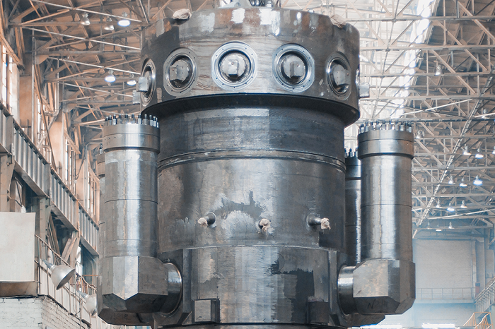

Росэнергоатом получил статус эксплуатирующей организации АЭС малой мощности в Якутии
Концерн «Росэнергоатом» (Электроэнергетический дивизион Госкорпорации «Росатом») официально получил статус эксплуатирующей организации АЭС малой мощности (АСММ) в республике Саха (Якутия). Соответствующий приказ подписал глава Госкорпорации «Росатом» Алексей Лихачёв.
 В основе проекта АСММ лежит новейшая российская разработка - водо-водяной ядерный реактор РИТМ-200Н - результат адаптации инновационной технологии судового исполнения под наземное размещение. Реакторы серии РИТМ-200 прошли испытания в суровых условиях Арктики на новейших российских ледоколах. По сравнению с традиционными станциями Якутская АСММ будет намного компактнее, что позволит сократить сроки её строительства. На текущий момент подготовительные работы в районе п. Усть-Куйга идут полным ходом: завершены работы по сооружению первого городка строителей (ВГС-1) на 250 человек, начато сооружение первой очереди второго городка строителей на 683 человека, завершение которой ожидается в четвертом квартале 2024 года. Начато сооружение автодороги № 1 протяженностью 12 км, соединяющей п. Усть-Куйга и площадку АСММ. Начата добыча местного материала (крупнообломочного грунта и щебня в карьере Придорожный). Первая наземная АСММ будет сооружена в якутском поселке Усть-Куйга. Соглашение об этом Росатом и правительство Республики Саха (Якутия) заключили еще в 2019 году. Благодаря проекту АСММ, удаленные северные территории Якутии получат надежный и качественный источник энергоснабжения для освоения золоторудного месторождения Кючус и других месторождений полезных ископаемых. Получение лицензии Ростехнадзора в апреле 2023 года стало очередным важным шагом в реализации этого проекта. А в октябре в п. Усть-Куйга успешно прошли общественные слушания материалов обоснования лицензии на осуществление деятельности в области использования атомной энергии – сооружение ядерной установки: «Энергоблок №1 Якутской атомной станции малой мощности (п. Усть-Куйга, Усть-Янский улус)», включая предварительные материалы оценки воздействия на окружающую среду.